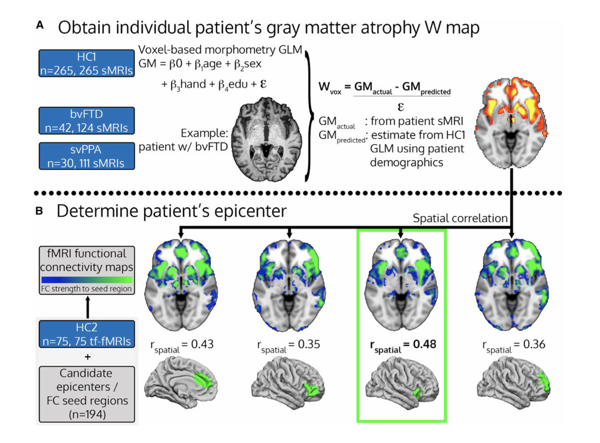
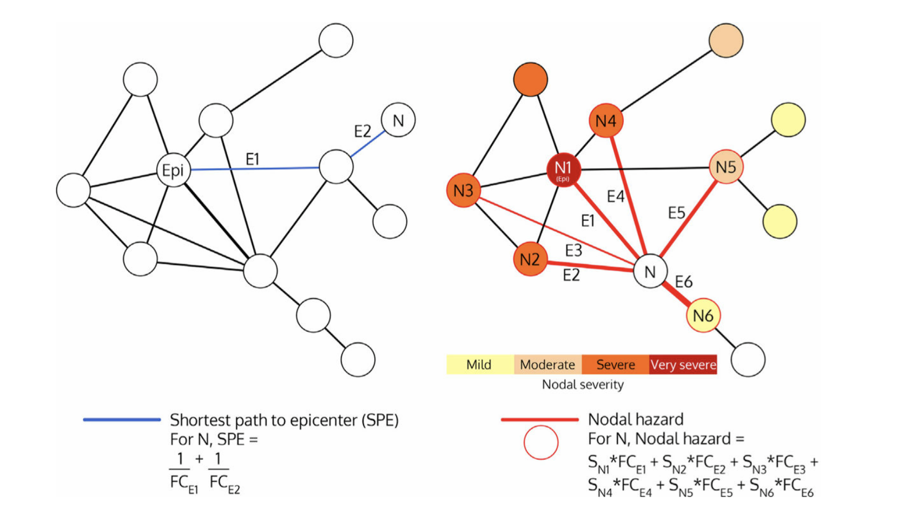
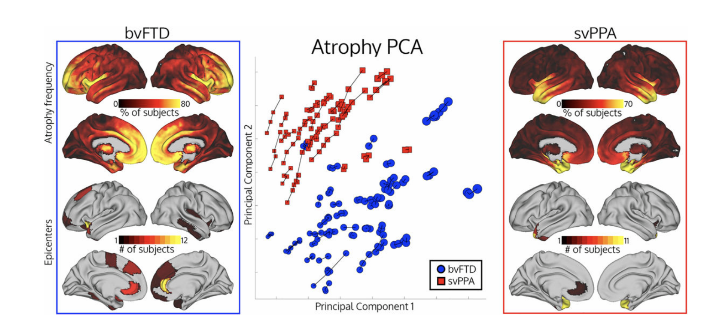
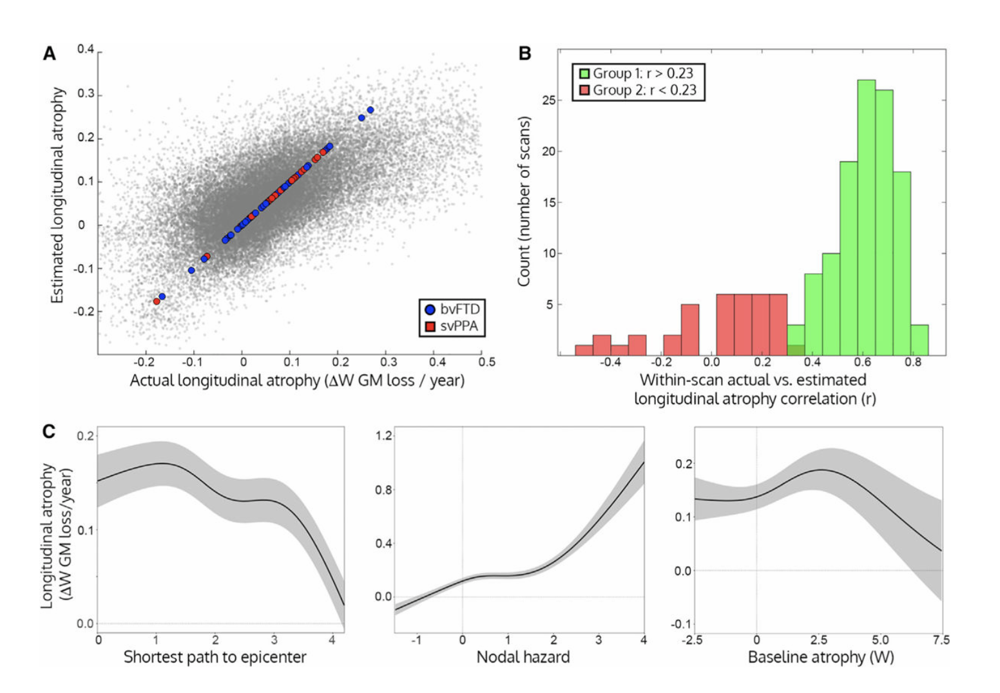
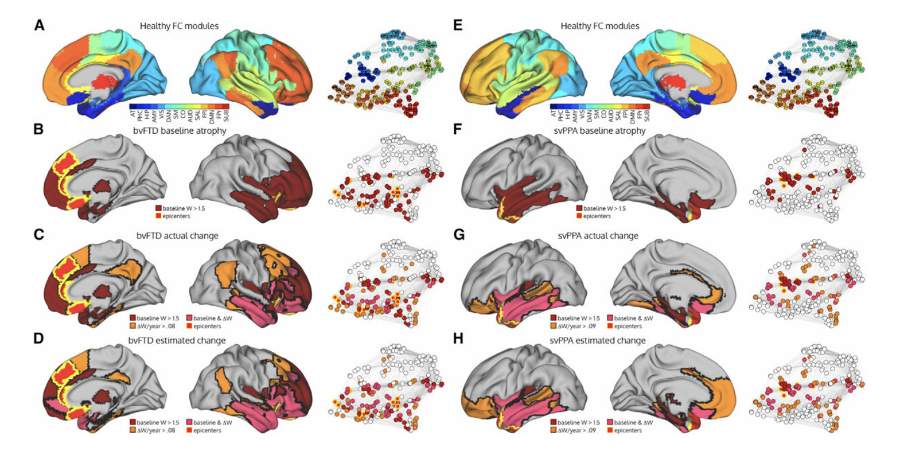
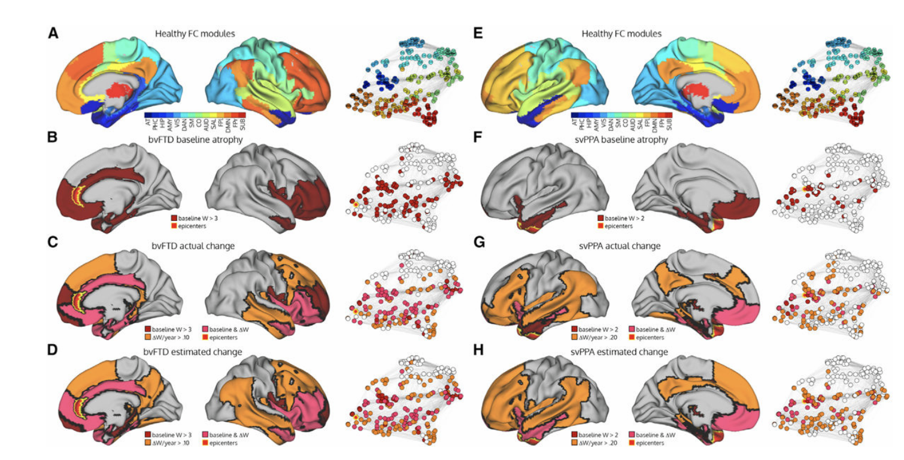

Patient-Tailored, Connectivity-Based Forecasts of Spreading Brain Atrophy
Neuron · 부검 코호트 + 종단 sMRI · Network-based atrophy progression model
개인별 epicenter 식별
bvFTD·svPPA 환자 각각에서 baseline atrophy 패턴과 healthy FC map의 spatial correlation으로 환자 개별 epicenter를 정의
Network-based 확산 모델
Shortest path to epicenter (SPE) + Nodal hazard 두 가지 그래프 지표로 향후 1년 atrophy 변화량을 예측
환자 맞춤형 예후
집단 평균이 아닌 개별 환자의 connectome 기반 예측 → 임상에서 진행 위험 영역을 사전 식별
FTD spectrum의 두 표현형(bvFTD, svPPA)에서 개인별 epicenter를 식별하고, healthy connectome 그래프 위에서의 거리·강도 지표(SPE, Nodal hazard)만으로 1년 후 voxel 단위 회백질 위축을 예측한다. 73%의 스캔에서 r > 0.23, 평균 r ≈ 0.55의 within-scan 상관을 달성.
왜 강한 임팩트를 가지는가: 신경퇴행이 connectome을 따라 "전파(spread)"한다는 가설을 환자 단위에서 정량화한 첫 사례 중 하나. 단순 두 가지 그래프 지표만으로 종단 위축의 어느 영역이 가장 빠르게 진행할지 예측 가능함을 보였다 — 향후 임상시험 endpoint 설계와 환자 stratification에 직접적 함의.

Background
왜 connectome 기반 예측이 필요한가 — Introduction의 논리 흐름
FTD spectrum: bvFTD와 svPPA
행동·인격·실행기능 장애로 시작. 위축은 anterior insula, ACC, 안와전두엽, 전측 측두엽을 중심으로 광범위하게 진행.
의미 기억 손상으로 시작. 위축은 좌측 측두엽 극부에서 시작하여 측두엽 전반과 변연계로 확산되는 비교적 좁은 시작점.
두 phenotype 모두 진단 시점부터 위축이 특정 영역에 국소화(focal)되어 시작된다는 점이 핵심이다. 시간이 지나면서 위축은 인접한 구조적 이웃이 아니라, 기능적/구조적으로 연결된 distant 영역으로 번져 나간다. 이는 단순 nearest-neighbor 확산이 아닌 connectome-mediated spread를 시사한다.
두 질병은 서로 다른 연결망을 따라가는가? — 이것이 첫 번째 단서.
Network-based degeneration hypothesis
과거 십수 년의 연구들은 신경퇴행 질환의 위축 패턴이 healthy functional connectivity network와 잘 정렬된다는 것을 반복적으로 보여 왔다. AD는 default mode network, bvFTD는 salience network, svPPA는 좌측 anterior temporal language network를 따라 진행한다.
이는 "tau·TDP-43 등 misfolded 단백질이 시냅스를 통해 trans-synaptic하게 전파된다"는 prion-like 가설과 부합한다. 위축의 시작점을 epicenter로 정의하고, epicenter와 강하게 연결된 영역일수록 빠르게 위축된다는 것이 핵심 예측이다.
그렇다면 이 가설을 환자 단위에서 정량적으로 검증할 수 있는가?
집단 평균에서 개별 환자로
기존 network-degeneration 연구는 대부분 집단 평균 atrophy map과 집단 epicenter 수준에서 작동했다. 그러나 임상에서 마주하는 것은 한 명의 환자이며, 환자마다 epicenter의 위치와 atrophy 분포가 다르다 — 같은 bvFTD라도 우측 insula 우세형이 있고 좌측 frontal 우세형이 있다.
따라서 "이 환자의 1년 뒤"를 예측하려면 (1) 그 환자의 baseline atrophy로부터 epicenter를 추정하고, (2) 그 epicenter에서 출발하는 connectome 기반 확산 동역학을 모델링해야 한다. 이것이 patient-tailored forecasting의 의미다.
개별 환자의 atrophy 패턴은 정말 다른가? PCA로 확인.
답하지 못한 두 질문
Gap A · 환자별 epicenter
각 환자의 baseline 위축만으로 epicenter를 객관적으로 결정하는 표준 절차가 부족했다. group-level epicenter는 평균을 잡지만 임상에서는 개별 환자의 starting point가 더 중요하다.
Gap B · 종단 예측 ★
connectome 위에서 어떤 그래프 지표가 향후 위축을 가장 잘 설명하는지 — 단순 epicenter와의 거리(SPE)가 충분한가, 아니면 이미 위축된 이웃들의 누적 위험(Nodal hazard)을 합산해야 하는가 — 가 명확하지 않았다.
두 가지 그래프 지표를 모두 정의하고 비교 검증하자.
3가지 구체적 목표
개별 epicenter 식별
194개 후보 region 중 환자 W map과 spatial correlation이 가장 높은 region을 epicenter로 선택
두 그래프 지표 정의
SPE (epicenter까지 inverse-FC 가중 최단 경로) + Nodal hazard (모든 이웃 노드 severity × FC 합)
종단 atrophy 예측
두 지표 + baseline atrophy 회귀로 ΔW/year를 voxel 단위로 예측. 73%의 스캔에서 r > 0.23 달성
Methods
두 코호트 + 두 그래프 지표 + 회귀 예측
VBM GLM 학습
FC graph 추출
124 sMRIs
111 sMRIs
Cohort & Imaging
두 개의 healthy control 코호트를 분리해서 활용한다. HC1 (n=265 sMRI)은 age·sex·handedness·education을 공변량으로 갖는 voxel-based morphometry GLM의 normative 모델 학습용. HC2 (n=75 tf-fMRI)는 194개 region 간 functional connectivity graph를 추출하여 모든 환자에게 공통으로 적용되는 healthy connectome을 구성한다.
환자는 bvFTD 42명·svPPA 30명, 각각 평균 3회 가까운 종단 sMRI를 보유한다 (총 124 + 111 = 235 sMRIs).
두 가지 그래프 지표의 정의

Results I: Atrophy 패턴의 개별성
PCA로 본 bvFTD vs svPPA, 그리고 환자 내 시간적 일관성
Phenotype 수준의 분리
Atrophy frequency map에서 bvFTD는 안와전두·ACC·insula 우세, svPPA는 좌측 anterior temporal pole 우세 — 두 표현형은 PCA 공간에서 PC1·PC2 모두에서 명확히 분리된다.
환자 내 종단 trajectory
한 환자의 여러 시점 sMRI는 PCA 공간에서 거의 직선적으로 이동 — 즉 각 환자는 자기만의 atrophy 방향성을 갖고, 시간이 지나도 그 방향에서 이탈하지 않는다.

Figure 2 요약: 왜 개별 epicenter 정의가 정당한가?
bvFTD는 epicenter가 12개 region에 걸쳐 분산되어 있다 — 같은 진단명 안에서도 환자마다 시작점이 다르다는 직접 증거. 반면 svPPA는 좌측 anterior temporal lobe라는 비교적 좁은 영역에 epicenter가 모이지만, 정확한 hotspot은 환자마다 미세하게 다르다. PCA에서 환자별 trajectory가 분기 없이 직선이라는 점은, 한 번 결정된 epicenter가 환자의 종단 위축 방향을 안정적으로 결정함을 시사한다.
Results II: 종단 위축 예측 성능
SPE + Nodal hazard로 1년 뒤 voxel-wise ΔW를 어떻게 맞히는가
Voxel-wise 예측 정확도
모든 환자·모든 voxel을 합치면 estimated ΔW와 actual ΔW의 산점도가 양의 강한 상관을 보인다. 환자 개별 시점 별로 within-scan 상관을 계산하면 중앙값 r ≈ 0.55이며, 73%의 스캔에서 r > 0.23 (Group 1), 27%는 r < 0.23 (Group 2).
두 지표의 비선형 기여
부분 회귀 곡선에서 SPE는 단조 감소 — epicenter에서 멀수록 위축이 적다. Nodal hazard는 단조 증가이며 큰 hazard 영역에서 가속도가 붙는다. Baseline atrophy는 중간값에서 최대 — 이미 완전히 망가진 voxel은 추가 변화량이 0에 가깝고 (floor 효과), 완전히 정상인 voxel도 변화량이 작다.

Results III: 환자별 spatial 예측
실제 변화와 모델 추정이 어디서 어떻게 일치하는가
예측이 단지 "어떤 영역이 빠르게 망가질 것이다"가 아니라 해부학적 위치까지 맞아야 임상적으로 의미가 있다. 환자별 baseline atrophy, 1년 후 actual change, 모델 estimated change의 세 지도를 같은 색상 코드로 비교한다.
bvFTD & svPPA — 두 표현형 모두에서 spatial 일치
bvFTD (Figure 5 좌측)
Baseline atrophy가 안와전두·ACC·insula에 집중되어 있고 (B), 1년 뒤 actual change는 medial frontal 외측·측두엽으로 확장 (C). Estimated change (D)는 동일 영역 — 분홍 = baseline & ΔW 공통, 주황 = 새 영역 — 을 정확히 예측. Healthy FC modules (A) 위에 매핑하면 frontoparietal·salience network 라인을 따라 전파.
svPPA (Figure 5 우측)
Baseline atrophy는 좌측 anterior temporal pole에 집중 (F). Actual change는 측두엽 후방·반대편·변연계로 확산 (G), estimated 역시 같은 패턴 (H). Healthy FC modules (E) 기준 좌측 temporal language network에서 출발해 contralateral hemisphere로 이어지는 spread.

진행이 빠른 케이스 — Figure 6
더 진행된 환자(baseline W > 3 in bvFTD, > 2 in svPPA)에서도 모델은 작동한다. svPPA의 경우 좌측 측두엽 위축이 이미 심한 상태에서 시작했음에도, contralateral 측두엽과 변연계로의 확산을 estimated map이 정확히 잡아낸다. bvFTD는 양측 medial frontal·anterior temporal로의 광범위한 확장이 예측된다.

- 모델 강점: 단 두 가지 그래프 지표 (SPE, Nodal hazard) + baseline 만으로 voxel 단위 spatial 예측이 가능 — black-box ML 없이 해석 가능
- Phenotype 일반화: bvFTD와 svPPA처럼 시작점·연결망이 다른 두 phenotype에 동일 모델을 적용하여 양쪽 모두 작동
- 진행 단계 robust: baseline W가 작은 초기 환자(Figure 5)와 큰 후기 환자(Figure 6) 모두에서 비슷한 spatial 정확도 — saturation 영역을 inverted-U baseline 항이 자연스럽게 처리
- Group 2 (27%)의 의미: r < 0.23인 스캔에서는 atrophy가 이미 평탄화되어 변화량 자체가 작거나, prion-like spread가 아닌 다른 메커니즘 (혈관성·미세출혈 등)이 우세할 가능성 — 추가 분석 대상
Discussion
임상·연구적 함의와 한계
임상시험 stratification
개별 환자의 SPE·Nodal hazard 분포를 사용해 1년 후 가장 빠르게 위축될 영역을 사전 식별 → MRI endpoint 기반 임상시험에서 환자를 fast-progressor / slow-progressor로 stratify하거나 ROI를 환자별로 사전 정의 가능.
Trans-synaptic spread 가설의 정량 지지
Healthy connectome 그래프 위의 단순 거리·이웃 위험 합이 1년 변화량을 설명한다는 사실은, misfolded protein의 시냅스 매개 전파 가설이 환자 단위에서도 유효함을 강하게 시사.
한계 1 — 단일 healthy connectome
모든 환자에게 75명 HC2 평균 FC graph를 적용했다. 환자 자신의 baseline rs-fMRI를 쓸 경우 예측이 더 좋아질 수 있지만, 진행된 환자에선 FC 자체가 왜곡돼 있어 절충이 필요하다.
한계 2 — Group 2의 27%
예측이 잘 되지 않는 약 1/4의 스캔이 존재. 이들은 단순 noise일 수도 있고, prion-like spread 외의 병리 — vascular co-pathology, comorbid AD 등 — 가 작동하는 환자일 수도 있다. 추가 분류·종합 모델이 향후 과제.
FTD spectrum의 두 표현형에서 환자별 atrophy epicenter를 baseline W-map만으로 식별하고, healthy connectome의 두 그래프 지표 (SPE, Nodal hazard)와 결합하여 1년 후 voxel-wise 위축을 예측할 수 있다. 단순하고 해석 가능한 모델이 신경퇴행의 network spread 가설을 환자 단위 정량 예측으로 환원시켰다는 점이 본 연구의 핵심 기여이다.